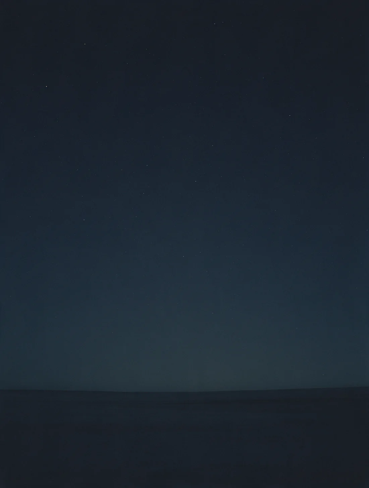
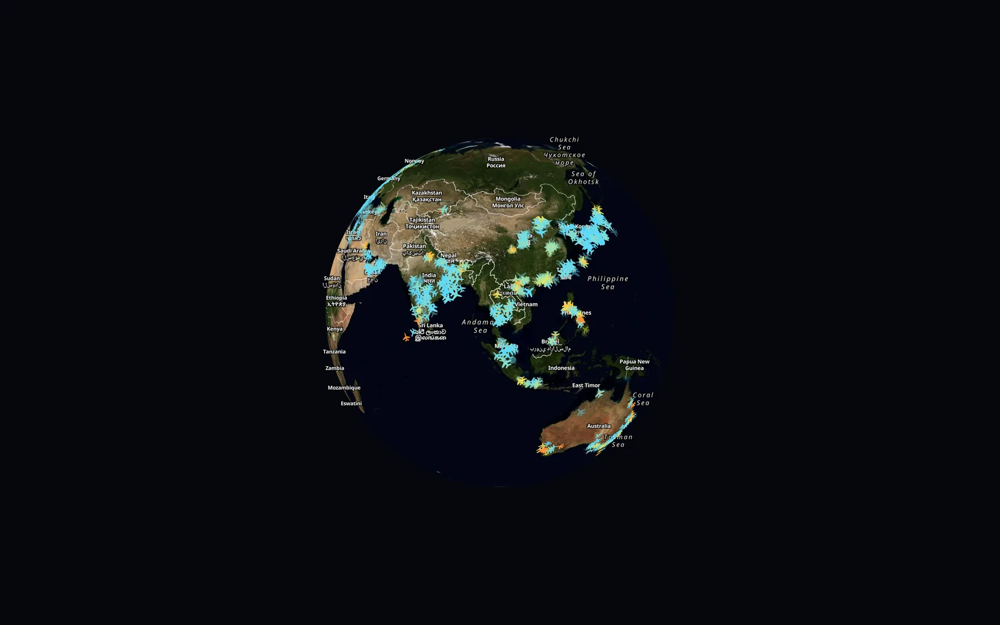
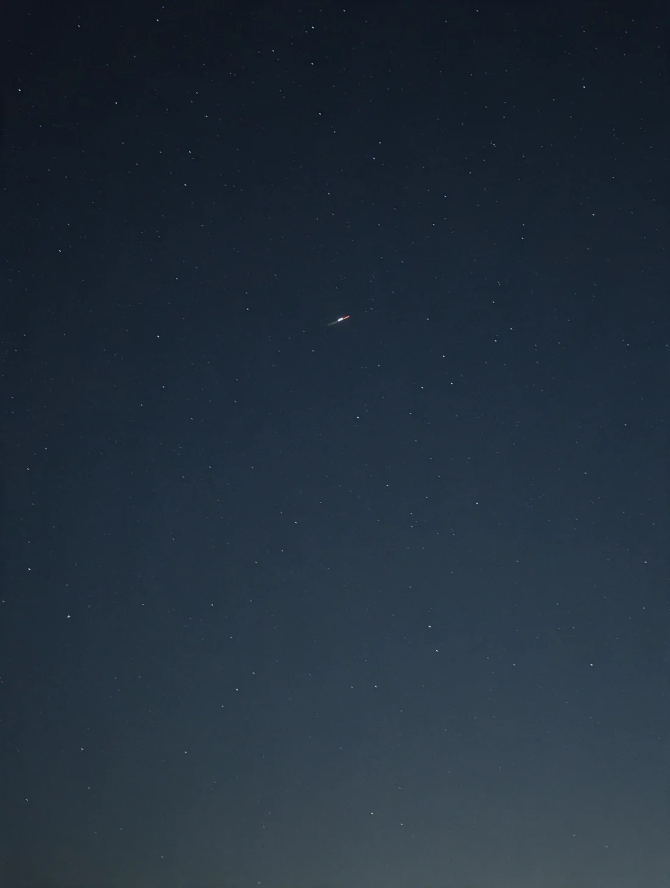
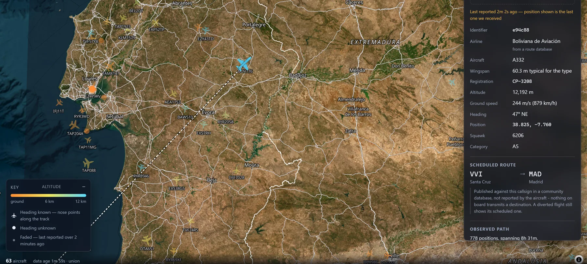
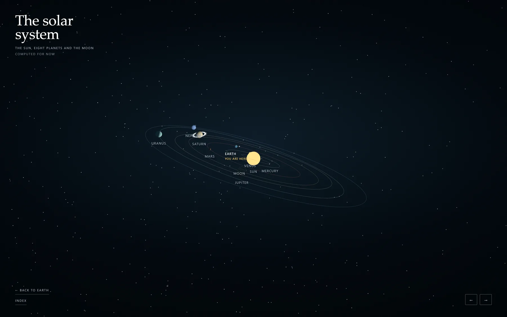
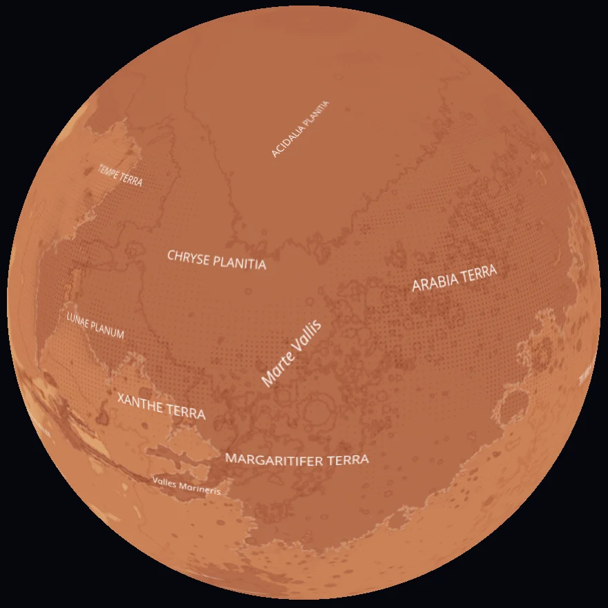
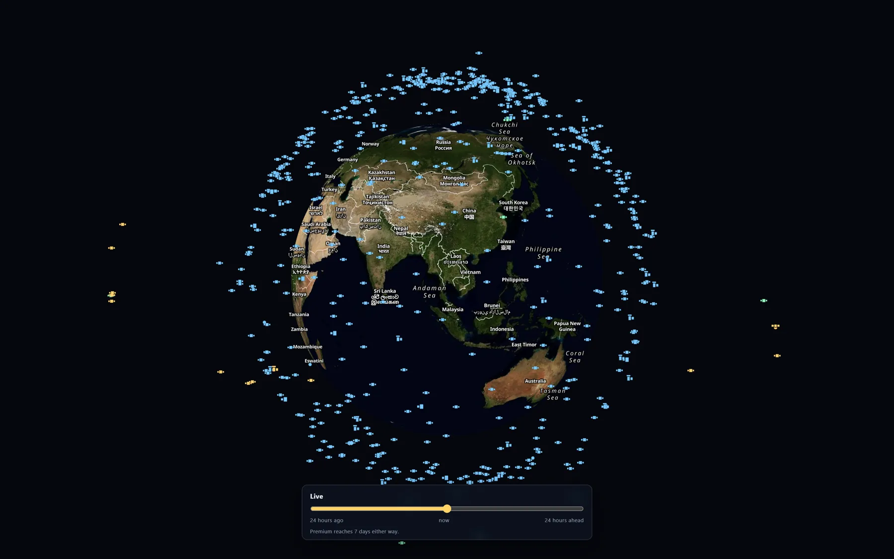
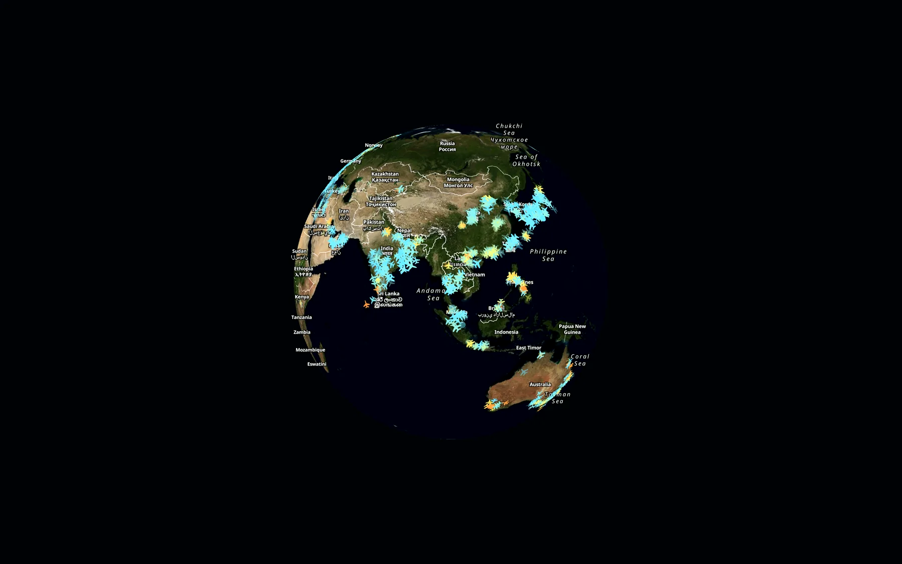

Orbital: live aircraft, satellites, ships and the solar system, on the Earth in your browser.

Look up.
On a clear night, away from a city, you might pick out six moving lights in an hour. Most people never look, and the sky reads as empty.

Look again.
Seven thousand two hundred and five aircraft were in the air over this hemisphere at the moment the picture was taken. Not a simulation of them. Them.

A light, moving.
Too high to hear. Too far to make out a shape. You cannot tell a widebody from a regional jet, or a departure from something eight hours into a crossing.
- What it isunknown
- Where it came fromunknown
- Where it is goingunknown

BOV776.
An Airbus A330, registered CP-3208, at 12,192 metres and 879 kilometres an hour. Santa Cruz to Madrid. Orbital has watched 778 positions of it over eight and a half hours, most of them over open ocean.
The record has holes.
- Silence in the record
- Distance across it
- Which averages
- Flight that distance needs
- Time it cannot account for
Mars is up tonight.
It is in that photograph somewhere, and you would never pick it out. At this distance a planet and a star are the same thing: a dot that does not blink.

The Earth becomes one of eight.
Pull back far enough on the globe and the map stops being a map. The sun, eight planets and the moon, every one of them computed for the moment you are looking. Now stop going down, and go outwards instead.
Eight, in order.
Everything from here out is computed rather than heard: no receiver on a hill reports a planet. The positions are arithmetic, run for the moment you are reading this.
-
Mercury
First outSmall, airless and scarred. It very nearly did not make it into the app at all: it is absent from the tile server's own index and only turned up by guessing the URL.
- Across4,879 km
- From the Sun57.9 M km
- Sunlight takes3.2 min
- Moons0
Landable. MESSENGER's mosaic, down to zoom 5.
-
Venus
Second outThe interesting absence. Magellan mapped the whole of it by radar through the cloud, so the ground is known in detail — it just is not published in a projection this map can read.
- Across12,104 km
- From the Sun108.2 M km
- Sunlight takes6.0 min
- Moons0
Not landable. Mapped by radar through the cloud, but not as tiles we can use.
-
Earth
Third outThe only one on this rail with traffic over it. Everywhere else is a position; this is a position with twelve thousand aircraft, fourteen thousand ships and a shell of satellites on top of it.
- Across12,742 km
- From the Sun149.6 M km
- Sunlight takes8.3 min
- Moons1
Landable. To zoom 19, and so is the Moon beside it.
-
Mars

Fourth outViking's mosaic with the names left on it. Valles Marineris runs four thousand kilometres and you can scroll the length of it, over ground with nothing at all flying above it.
- Across6,779 km
- From the Sun228.0 M km
- Sunlight takes12.7 min
- Moons2
Landable. Viking MDIM21, down to zoom 8.
-
Jupiter
Fifth outEleven Earths across, and the jump in the scale below is the real one: everything before this was crowded into the first third of the line.
- Across139,822 km
- From the Sun778.5 M km
- Sunlight takes43 min
- Moons95
Not landable. No solid surface — cloud all the way down.
-
Saturn
Sixth outLess dense than water. The rings are two hundred thousand kilometres across and a few tens of metres thick, which is why they vanish edge-on.
- Across116,464 km
- From the Sun1,432 M km
- Sunlight takes1 h 20 min
- Moons146
Not landable. No solid surface — cloud all the way down.
-
Uranus
Seventh outTipped over onto its side, so its poles take the sunlight and its equator takes the night. A season there lasts twenty-one years.
- Across50,724 km
- From the Sun2,867 M km
- Sunlight takes2 h 39 min
- Moons28
Not landable. No solid surface — cloud all the way down.
-
Neptune
Last oneFour and a half billion kilometres out. Sunlight takes four hours to arrive, so nothing anyone has ever known about this place was less than four hours old when they learned it.
- Across49,244 km
- From the Sun4,515 M km
- Sunlight takes4 h 11 min
- Moons16
Not landable. No solid surface — cloud all the way down.
Keep scrolling
Aircraft and ships are heard, not known.
Volunteers on the ground run receivers. Where nobody is listening, over most of an ocean or all of western China, an aircraft genuinely vanishes and comes back on the far side. Orbital draws the gap instead of guessing across it.

Nobody watches these. Their positions come from published orbital elements, propagated to the instant you are looking. That layer costs nothing, needs no account, and keeps working for days after every upstream has gone down.
So: the sky you can see, and the sky as it is.

Open the window.
Aircraft, satellites, ships, the moon and eight planets, on one Earth you can turn. No account, nothing to install.
Open Orbital